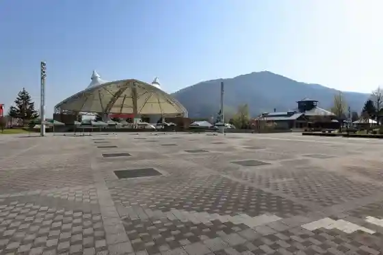
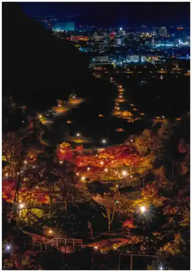
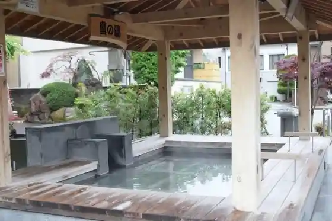
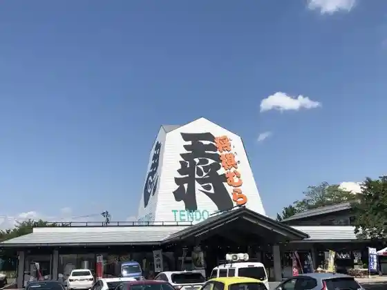

Roadside Station Tendo Onsen
Tendo, Yamagata · 023-651-2002 · Official / source link

Tendo Park Momiji Sono Raitoappu
Tendo, Yamagata · 023-654-1111 · Official / source link

Tendo Onsen
Tendo, Yamagata · 023-653-6146 · Official / source link

Shogi Mura Tendo Tawa
Tendo, Yamagata · 023-653-3222 · Official / source link

Tendo Park (Maizuru Yama)
Tendo, Yamagata · 023-654-1111 · Official / source link
Suzu Tateyama Wakamatsu Tera (Tendai Shu) / Saijo Sanju San Kannon Dai 1 Ban Wakamatsu Kannon
Tendo, Yamagata · 023-653-4138 · Official / source link
Hiroshige Art Museum
Tendo, Yamagata · 023-654-6555 · Official / source link
Tendo Shogi Museum
Tendo, Yamagata · 023-653-1690 · Official / source link
Naka no Furutsu (Nakano Kanko Orchard)
Tendo, Yamagata · 023-656-2775 · Official / source link
Jagaramogara
Tendo, Yamagata · Official / source link
Osho Orchard
Tendo, Yamagata · 023-657-3211 · Official / source link
Tendo Eki
Tendo, Yamagata · 050-2016-1600 · Official / source link
Yamagataken Sogo Sports Park
Tendo, Yamagata · 023-655-5900 · Official / source link
Kaki Koma Experience (Oki Koma) / Tendo
Tendo, Yamagata · 023-653-2843 · Official / source link
Ganso Tendo Kanko Orchard
Tendo, Yamagata · 023-654-1558 · Official / source link
Tendo Wain
Tendo, Yamagata · 023-655-5151 · Official / source link
TENDO BREWERY
Tendo, Yamagata · 023-654-3311 · Official / source link
Koma Baths / Ashiyu
Tendo, Yamagata · 023-653-1680 · Official / source link
Dewazakura Art Museum
Tendo, Yamagata · 023-654-5050 · Official / source link
Furawa & Tezu Kuri no Mise Watashi no Heya / Benibana Some Experience
Tendo, Yamagata · 023-654-5045 · Official / source link
Ten Baths / Ashiyu
Tendo, Yamagata · 023-653-1680 · Official / source link
Tendo Mokko Shorumu Kengaku
Tendo, Yamagata · Official / source link
Tachiya Kawa no Shibazakura (Tachiya Kawa no Hana Sakajiisan)
Tendo, Yamagata · 090-3366-9325 · Official / source link
Wakamatsu Tera
Tendo, Yamagata · 023-653-4138 · Official / source link
Takayanagi Orchard
Tendo, Yamagata · 023-653-7666 · Official / source link
Brewlab.108
Tendo, Yamagata · 090-4755-6872 · Official / source link
Sanchoku Mise Sanpyua
Tendo, Yamagata · 023-658-8101 · Official / source link
Tendo Rekodosaron
Tendo, Yamagata · Official / source link
Dewazakura Shuzo
Tendo, Yamagata · 023-653-5121 · Official / source link
Tendo Highlands Ski Area / Campground
Tendo, Yamagata · 023-657-3628 · Official / source link
Myoho Tera
Tendo, Yamagata · 023-653-2496 · Official / source link
Warabe Baths / Ashiyu
Tendo, Yamagata · 023-653-6146 · Official / source link
Tendo Tawa / Benibana Some Kyoshitsu
Tendo, Yamagata · 023-653-3222 · Official / source link
Kenkun Shrine
Tendo, Yamagata · 023-653-0289 · Official / source link
Sanpo Tera
Tendo, Yamagata · 023-653-2551 · Official / source link
Karyu Orchard
Tendo, Yamagata · 023-653-7667 · Official / source link
Kura Tsugawa Shidare Sakura
Tendo, Yamagata · 023-654-1111 · Official / source link
Tendo Art Museum
Tendo, Yamagata · 023-654-6300 · Official / source link
Yu Bo Ichiraku
Tendo, Yamagata · 023-654-3311 · Official / source link
Tendo Saijo Kawa Onsen Yupia
Tendo, Yamagata · 023-651-3333 · Official / source link
Furu Sato Orchard
Tendo, Yamagata · 023-656-2622 · Official / source link
Kanehachi Moritani Orchard
Tendo, Yamagata · 023-657-3008 · Official / source link
Tendo Onsen Toraberazuraunji
Tendo, Yamagata · 023-654-6699 · Official / source link
Tendo Oda no Sato Rekishikan (Tendo Ritsu Kyu Higashi Village Yama Gun Yakusho Museum)
Tendo, Yamagata · 023-653-0631 · Official / source link
Konno Kanko Orchard
Tendo, Yamagata · 023-654-0187 · Official / source link
Tendo Shinrin Johokan (Mori Na) Nature Keikan Meisho Annai
Tendo, Yamagata · Official / source link
Dai Town Sakurambo Sono
Tendo, Yamagata · 023-654-4110 · Official / source link
Danran Taki (Fudo Falls)
Tendo, Yamagata · Official / source link
O Kuraku Sono
Tendo, Yamagata · 023-653-3392 · Official / source link
Tendo Shogi Koryu Shitsu
Tendo, Yamagata · Official / source link
Mitobe Shuzo
Tendo, Yamagata · 023-653-2131 · Official / source link
Nishinuma Ta Iseki Park
Tendo, Yamagata · 023-654-7360 · Official / source link